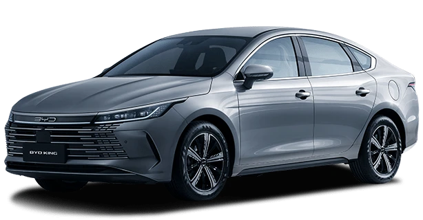

Até o final de maio, a BYD está oferecendo um desconto de R$ 25 mil na versão GL, de entrada, do sedã médio híbrido plug-in BYD King. Normalmente comercializado com o preço de R$ 172.990, está R$ 147.990 no site da fabricante chinesa. Com isso, está mais barato que outros sedãs compactos a combustão.
